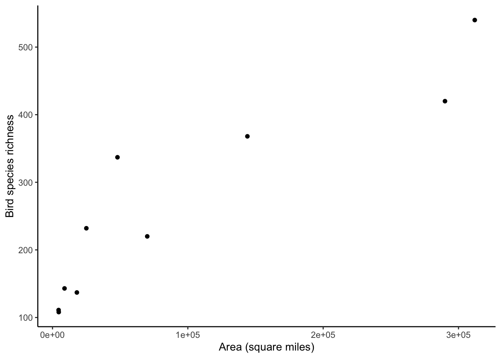
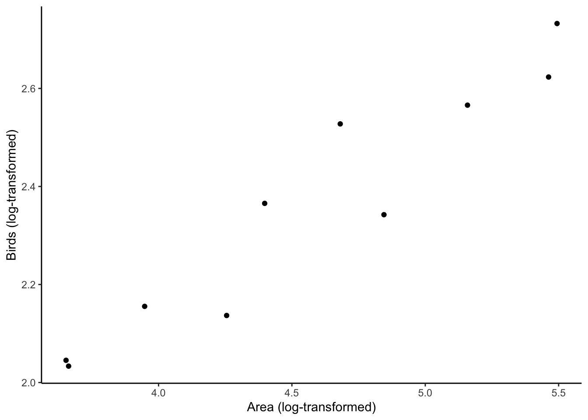

Observations of species richness (counts of species) across islands (or habitat fragments–sometimes called patches) showed a consistent relationship where as islands became larger in area, they tended to support more species: that is, larger habitat areas have higher species richness. This is a pattern that has been consistent across different taxonomic groups (e.g. vascular plants, birds, insects, fish) and regions (e.g. California, Southeast Asia, the Florida keys, etc.).
The species-area relationship holds that we can predict the number of species that would be found on a habitat of a given area. Specifically, if \(S\) denotes the number of species (species richness), then \(S = c A^z\) where \(A\) is habitat area, and \(c\) and \(z\) are constants.
### Loading packages
library(dplyr)
library(tibble)
library(ggplot2)
POMblue <- "#0057B7" # Pomona blue hex code
### Code to create a data table storing the Southeast Asian bird data
seAsiaBirds <- tibble::tibble(areaMi2=c(312000,290000,144000,70000,48000,25000,4500,8870,18000,4600),
birds=c(540,420,368,220,337,232,111,143,137,108))
### Display first few rows of the Southeast Asia bird dataset
seAsiaBirds
### Create a plot of bird richness versus island area
p <- ggplot(seAsiaBirds,aes(x=areaMi2, y=birds))
p <- p + geom_point()
p <- p + labs(x="Area (square miles)",y="Bird species richness")
p <- p + theme_classic()
p
Oof! What we can see in the previous plot are the issues I raised in class on Tuesday (lecture 9). Issue 1): The x-axis values and y-axis values are quite wide-ranging (x-axis range: [4500, 312000]; y-axis range: [108, 540]). Issue 2): The relationship looks like a non-linear relationship, and a power law specifically. Is there some way that we can make this relationship of species richness ~ habitat area more linear?
I show you how to calculate \(d\) (where \(d = \log_{10} c\) from the log-log linear species-area relationship) and \(z\) in R below. lm is an R function to perform an ordinary least squares linear regression. Don’t worry too much about the details for lm; we’ll look at lm in more depth in a later week’s tutorial.
First, we confirm that the log-log transformation makes the Southeast Asian bird-habitat area relationship look linear. Second, we use lm to calculate \(d\) and \(z\).
### Below, we first apply log10 to the columns of our data on SE Asian birds
seAsiaBirds <- seAsiaBirds %>%
mutate(log10Area = log10(areaMi2), log10Birds = log10(birds))
# Display seAsiaBirds in the console
seAsiaBirds
# Confirm that the log-log transformation linearized our data
p <- ggplot(seAsiaBirds,aes(x = log10Area, y = log10Birds))
p <- p + geom_point()
p <- p + labs(x="Area (log-transformed)",y="Birds (log-transformed)")
p <- p + theme_classic()
p
Below, we will calculate the coefficients for the species-area relationship.
### Use lm to calculate the values of d and z and store the model in the object speciesAreaModel
speciesAreaModel <- lm(log10Birds ~ log10Area, data=seAsiaBirds)
## See the values estimates for d and z
print("The cofficient names (Intercept) corresponds to d and log10Area to z")
coef(speciesAreaModel)
## Store the estimates in the objects d and z
d <- coef(speciesAreaModel)[1] # first item in this two-item vector is the intercept of the straight line fit to our log-log transformed Southeast Asian birds dataset
z <- coef(speciesAreaModel)[2] # second item in the two-item vector is the slopeLet’s try an example! Given these values for \(z=0.35\) and \(d=0.76\) (where \(c=10^d = 10^{0.76} = 5.7\)), let’s estimate how many birds we would expect for the smallest island, Palawan: \(S = 10^{0.76} 4500~\text{square miles}^{0.35}\), which yields around 109 species. In our dataset, Palawan in fact had 111 species - so we can see that this predicted richness of 109 species is not too far off from the actual richness!
For the discussion activity, assume we’re looking at habitat loss in Palawan. Assume it is 100% forested. What would happen if we lose 10% of the forest habitat in Palawan?
### We can take the value of z that we calculated in the Southeast Asia
### bird dataset and use that to calculate 1) what proportion of species
### would remain after habitat loss and 2) what number of species would be
### lost after habitat loss.
SR1 = 111 # initially we have 111 species in this example (Palawan)
R = 0.9 # We lose 10% of habitat in this example: (1-R)*100% = 10%
species_proportion_surviving <- R^z # what proportion of species will persist?
species_proportion_surviving # print out answer
### How many species will remain?
remaining_species_richness <- SR1 * R^z
remaining_species_richness # print out answerhabitat_area <- 70000 # Celebes' land area in square miles
sr_exp <- 10^d*habitat_area^z # calculating the expected species richness given the prior values
sr_exp # we see the number of expected speciesspecies_lost <- SR1 * (1-R^z)
species_lostSR1 = 111 # initially we have 111 species in this example (Palawan)
R = 0.8 # We lose 20% of habitat in this example: (1-R)*100% = 20%
species_proportion_surviving <- R^z # what proportion of species will persist?
species_proportion_surviving # print out answer
### How many species will remain?
remaining_species_richness <- SR1 * R^z
remaining_species_richness # print out answer
### How many species will be lost?
species_lost <- SR1 * (1-R^z)
species_lostBelow, I provide a lengthier explanation both about 1) how the log-log transformation takes the non-linear species-area relationship and makes it linear, and 2) how and why we have the equation presented in class for calculating species losses expected from habitat loss.
For the relationship between species and habitat area, \(S = c A^z\), how do we go about estimating \(c\) and \(z\)? This expression is a power law, so we can make it linear instead by taking a logarithm (henceforth, log) of both sides, such that: \(\log_{10}(S) = \log_{10}(c A^z)\)
New England Complex Systems Institute has a great explainer for power law relationships and a familiar example: the area of a square, which is always a power of its length. We can turn this power law relationship between habitat area and species richness to a linear one, by taking the logs of both variables (area and species richness).
MathBench at Univ. of Maryland has a great, intuitive explanation for why log-log transformations “linearize” power laws (that is, turn the relationship from a power law into a straight line).
Can we simplify this algebra above? Yeah! Note that \(\log_{10}(c A^z)\), by the properties of logs (see below if you’d like refresher on log properties), can be re-expressed as \(\log_{10}(c) + \log_{10}(A^z)\), which can be further simplified to \(\log_{10}(c) + z \log_{10}(A)\). From here on, I’m going to be lazy and drop the \(()\) and just write the above expression as \(\log_{10} c + z \log_{10} A\).
Now we can take \(\log_{10} c + z \log_{10} A\), and substitute it in to the right-hand side of \(\log_{10}(S) = \log_{10}(c A^z)\), which yields \(\log_{10} S = \log_{10} c + z \log_{10} A\).
Hm … this equation \(\log_{10} S = \log_{10} c + z \log_{10} A\) looks awfully like the equation for a straight line, if we let \(y\) denote \(\log_{10} S\) and \(x\) denote \(\log_{10} A\). Recall that the equation for a straight line is \(y = d + m x\), where \(d\) is the y-intercept (the value of \(y\) when \(x=0\)) and \(m\) is “rise over run”, or the slope, or simply how much \(y\) changes with every unit change in \(x\). (A nice explainer on slopes from the Monterey Institute.)
By substituting in the values from the linear species-area equation into the equation for a straight line, we realize that: \(y = \log_{10} S; d + mx = \log_{10} c + z \log_{10} A\). What does that mean? By pattern matching, we see that \(\log_{10} c\) is playing the same role as \(d\) (y-intercept) and \(z\) is playing the same role as \(m\) (slope or rise-over-run).
Thus, given that the relationship between \(\log_{10} S\) and \(\log_{10} A\) is a straight line, we expect that we should be able to 1) use \(\log_{10}\) to transform our actual species richness and habitat area data, then 2) fit a straight line to those \(\log_{10} - \log_{10}\) transformed data.
Now that we’ve estimated \(d\) and \(z\) above for the Southeast Asian bird dataset, let’s use those values to calculate the expected species richness on the island of Timor, which is 18,000 square miles. Given that \(\log_{10} S = \log_{10} c + z \log_{10} A\) and that \(d = \log_{10} c\), we can directly plug in our \(d\) and \(z\) values into: \(\log_{10} S = d + z \log_{10} A\). That’s annoying though, because we get a value for \(S\) that is log-10 transformed. That is, in this case \(S\) is described in powers of 10, rather than the actual number of species.
Alternatively, we can get rid of the logs by raising both sides to the power of 10, yielding: \(10^{(\log_{10} S)} = 10^{(d + z \log_{10} A)} \rightarrow 10^{(\log_{10} S)} = 10^{(d \log_{10}(A^z))} \rightarrow S = 10^d A^z \implies S = c A^z\). Recall that \(d = \log_{10} c \implies 10^d = c\), so this ends up working out as we convert \(d\) back to \(c\) by raising 10 to the power of \(d\).
Phew! Let’s go ahead and calculate the expected richness for Timor (18000 miles\(^2) = 10^d A^z\), which is about 176.76 species. The actual number of bird species on Timor is filter(seAsiaBirds,areaMi2==18000) %>% select(birds), which is 137 species. The numbers look pretty similar! However, it does appear that Timor has somewhat fewer species than expected (137 birds when given the other Southeast Asian island-bird data points, we’d expect 176.76 species).
Khan Academy has a great refresher series on calculating logarithms and logarithm properties.
You can also confirm the different rules of logs by using R as a calculator! Recall that in Week 1, we learned about how R can also be used as a calculator in addition to statistical computing. Below, I show how you can confirm the properties of logs using R.
Additionally, this is a friendly reminder that if you’re ever confused about a function, you can pull up a help page about it using ?functionname (e.g. ?mutate or ?geom_point). One of the things I find most helpful on the help page is the examples that are typically provided at the bottom of the help page.
### Recall the log-log species-area relationship:
### log S = log(c A^z) (Equation 1)
### we can confirm that the previous equation is
### mathematically equivalent to the following one:
### log S = log c + log(A^z) (Eqn. 2)
### which is in turn equal to:
### log S = log c + z log A (Eqn. 3)
### For convenience, we'll call c and z something different:
### c1 and z1
### That way, we don't overwrite the previously calculated values
### for c and z from the Southeast Asia bird dataset
### Let c1 = 5, z1 = 0.28, A = 1000
### We'll calculate both expressions
### and confirm that they are identical
c1 <- 5
z1 <- 0.28
A <- 1000
eqn1 <- log10(c1*A^z1)
eqn1 # value of the first equation
eqn2 <- log10(c1) + log10(A^z1)
eqn2 # value of second equation
eqn3 <- log10(c1) + z1*log10(A)
eqn3 # value of third equationOne of the reasons why the species-area relationship is so central to conservation is that it gives us a way to estimate how habitat loss can reduce the number of species a location (a.k.a. site, patch, fragment) can support.
However, we immediately encounter a problem. If we want to predict how species richness will change at one site, and we don’t have a local dataset to estimate \(c\) and \(z\), what are we supposed to do? Past ecological research indicates that \(z\) tends to fall in a fairly narrow range between [0.15, 0.39] (Preston 1962; MacArthur and Wilson 1967). However, values for \(c\) vary widely, depending on the taxonomic group (e.g. birds have a very different y-intercept for their straight-line log-log species-area relationship than insects or microbes) and region.
In a situation where we don’t have values of \(c\) and \(z\) for our system, while we can at least lean on these past values for \(z\), we’re going to want some way to get rid of \(c\).
Let’s start with \(A_0\) denoting the original amount (area) of habitat and \(A_1\) denoting the amount of habitat left after some is destroyed; that is, \(A_1 < A_0\). Similarly, \(S_0\) denotes the initial number of species and \(S_1\) the number of species after habitat conversion has brought the habitat area down from \(A_0\) to \(A_1\).
From the species-area (power law) relationship, we know that: \(S_1 = c A_1^z\) \(S_0 = c A_0^z\)
Maybe we can get rid of the pesky \(c\) term by dividing the two equations like so… \(\frac{S_1}{S_0} = \frac{c A_1^z}{c A_0^z}\)
We can cancel the two \(c\) terms in the numerator and denominator of the right-hand side fraction, and then the equation simplifies to \(\frac{S_1}{S_0} = \frac{A_1^z}{A_0^z}\)
We can simplify things further by noting that \(A_1\) is always going to be some fraction of \(A_0\), as \(A_0\) represents the original extent (area) of habitat, and \(A_1\) the amount of that habitat that is still standing after destruction happens. That is, \(A_1 = R A_0\) where \(R\) stands for habitat \(R\)emaining after loss.
In that case, when we plug in this expression \(A_1 = R~A_0\) to \(\frac{S_1}{S_0} = \frac{A_1^z}{A_0^z}\) we arrive at: \(\frac{S_1}{S_0} = \frac{(R~A_0)^z}{A_0^z}\)
Based on the product rule for exponents, \(\frac{S_1}{S_0} = \frac{(RA_0)^z}{A_0^z}\) is equivalent to: \(\frac{S_1}{S_0} = \frac{R^z A_0^z}{A_0^z}\)
We can cancel out the two \(A_0^z\) terms and finally land at: \(\frac{S_1}{S_0} = R^z\) This equation gives us a way to calculate what proportion of species remain after some fraction of habitat is lost.
We can multiply the denominator on the left hand side over, seeing that \(S_1 = S_0 R^z\). We can then also calculate the number of species lost, \(S_0 - S_1\), denoted as \(\Delta S\) as: \(\Delta S = S_0 - S_1 \rightarrow S_0 - S_0 R^z \implies \Delta S = (1-R^z) S_0\).